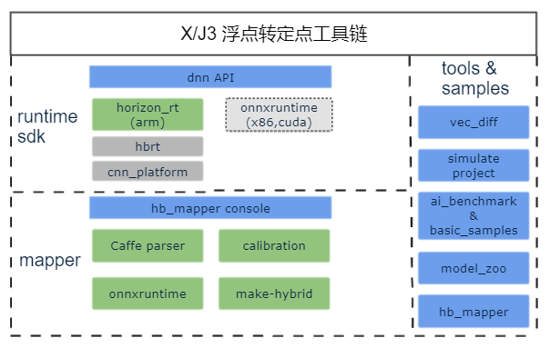

6.1. 简介
地平线X3芯片量化工具链是基于地平线旭日3代芯片研发的芯片算法解决方案，可以帮助您把浮点模型量化为定点模型， 并在地平线AI芯片上快速部署自研算法模型。
目前在GPU上训练的模型大部分都是浮点模型，即参数使用的是float类型存储；地平线BPU架构的AI芯片使用的是 INT8 的计算精度（业内AI芯片的通用精度），只能运行定点量化模型。从训练出的浮点模型转为定点模型的过程，我们叫做量化，依据是否要对量化后的参数进行调整，我们可以将量化方法分为QAT（Quantification Aware Training）量化感知训练和PTQ（Post-Training Quantization）训练后量化。
地平线X3芯片量化工具链主要使用的是训练后量化PTQ方法，只需使用一批校准数据对训练好的浮点模型进行校准, 将训练过的FP32网络直接转换为定点计算的网络，此过程中无需对原始浮点模型进行任何训练，只对几个超参数调整就可完成量化过程, 整个过程简单快速, 目前在端侧和云侧场景已得到广泛应用。 有关训练后量化PTQ方案的详细信息请阅读 训练后量化(PTQ) 章节内容。
地平线X3芯片量化工具链由PTQ模型后量化转换和嵌入式编译等部分组成，整体组成框图如下：
